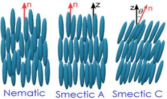
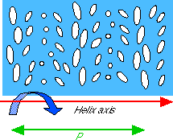
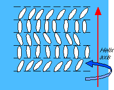

When classifying liquid crystal phases we first of all distinguish between two main types: one with nematic order and one with smectic order. In the nematic phase (of which the cholesteric phase is a special case) the molecules are free to move in all directions (i.e. there is no positional order of the centers of mass), but on the average they keep their long axes locally parallel (see figure 2). In a smectic state, of which a number of important structural variations exist (figure 6), we also have a positional order along one dimension (some smectic phases have positional order in more than one dimensions). A smectic is a layered structure with the molecules oriented parallell or tilted relative to the layer normal. Two smectic phases, called smectic A and smectic C, have acquired a special importance and are now relatively well understood. They are characterized by absence of positional order within the layers; the molecules have some freedom to move within the layers, while they, as in all smectic phases, are much less free to move between layers. These smectics can therefore be said to be stacks of two-dimensional fluids, but they behave as crystalline across the layers. The abscence of in-layer order contributes to their high potential for future electro-optic applications.
|
 |
| Figure 6. The smectic A (left) and C (right) phases. |
There are several smectic phases differing from one another in the tilt angle that the director makes with the layer normal, and also in the arrangement of molecules within each layer. The smectic phases that have been reported (eleven phases so far) do not exhaust the possibilities. The simplest is the smectic A phase (figure 6, left part) characterized by a director parallel to the layer normal and random positional order within the plane. Substances featuring the A phase also often exhibit the smectic C phase (figure 6, right part) at a lower temperature. In this phase the molecules have the same random order within the layer but tilt relative to the layer normal. The tilt angle normally increases with decreasing temperature.
The other smectic phases are even more crystalline in that they also feature some positional order within the layers. They may for instance exhibit hexagonal packing of the molecules.
So far we have avoided mentioning the important concept ofchirality. This is a strictly geometric concept and should therefore not be confused with something dependent of the different phases of the liquid crystal. A chiral object has such a shape that it cannot be superposed on its mirror image. An example is the human hand. Try putting on a left hand glove (the left hand is the mirror image of the right) on your right hand, and you'll get a "hands on" experience of what chirality means!
An object is either chiral or achiral (it either lacks or has mirror symmetry); it cannot be both. If a liquid crystaline substance consists of chiral molecules we denote this by putting a star after the phase labels, for instance N* or C*. Chirality is not a state of matter and there can thus be no phase transition from chiral to achiral, or vice versa. For instance, a nematic phase made up of chiral molecules (this is what we call a cholesteric) cannot turn into an achiral phase at a certain temperature. Chirality has important consequences on the macroscopic arrangement of the liquid crystal molecules and this in turn affects the optical behaviour of the substance.
The nematic phase of a chiral substance has a name of its own; the cholesteric phase. This has a historical background. The existence of liquid crystalline phases was discovered in 1888 by an Austrian botanist named Friedrich Reinitzer. His first observations were made on cholesteryl benzoate (thereby the name cholesteric) which is a chiral mesogen with a cholesteric phase between the solid and liquid states. The cholesteric phase features a helical arrangement of the molecules, as in figure 7a. As you see in the figure, the helix axis, around which the molecules twist, lies perpendicular to the local director. Since the twist has a constant strength throughout the sample, we get a periodic structure along the helix axis. It is not a positional periodicity but a directional. Every half turn of the helix the molecules are oriented the same way (remember that the director has no sign; turning it 180° or 360° gives the same result). If the full helical turn (generally called the pitch, P, of the cholesteric) is of the same order of magnitude as the wavelength of visible light, this has spectacular optical consequences. If we shine light with a wavelength corresponding to the pitch, through the sample along the helix axis, the circularly polarized component with the same handedness as the helix is totally reflected! This gives the substance a beautiful intense color, easily observable by the naked eye. Since the pitch varies with temperature, the color of the substance will also vary! The color will also vary with viewing angle since light entering at an angle sees a longer optical periodicity. You have most certainly seen this effect in some liquid crystal thermometer.
|
 |
 |
| Figure 7a. The chiral nematic, or cholesteric, phase forms a helical structure. The molecules twist in a plane perpendicular to the screen. | Figure 7b. The helical structure of the chiral smectic C* phase. The tilted molecules precess (the azimuthal angle changes) in a plane perpendicular to the screen. |
When a chiral substance exhibits smectic phases it can also lead to a defect-free twisted macroscopic structure. However, due to the layered structure, no twist can be admitted within the layer. Without breaking the layers, the orientation of the director can vary continuously only between the layers, thus when going from one layer to the next. Hence, the helix axis must now lie perpendicular to the layer planes. (In highly chiral substances, a frustrated phase called the Twist Grain Boundary (TGB) phase, where the helix axis is parallel to the layers, may be found - see below!) In the untilted A* phase this leads to no visible difference compared to the achiral A phase. However, the chirality of A* gives it new physical properties, different from those of the A phase. But when the director starts to tilt, as in the C* phase, we do get a helicoidal macroscopic structure, namely in that the azimuthal angle of the director changes with a constant value from layer to layer. This gives the structure of figure 7b. Normally it takes some hundred layers to complete one revolution in the azimuthal angle.
In some cases, when the intrinsic twisting power of the material is very high, the continuous layer structure of the smectic A* may break down, permitting a twist with twist axis perpendicular to the director, as in a cholesteric. This means that the smectic structure breaks down into periodic stacks of layers, with a finite twist in between, mediated by a regular array of screw dislocations. This kind of defect structure is called TGB (Twist-Grain-Boundary) phase and is the smectic correspondence to Blue Phase which may appear out of a cholesteric as a result of a very high twisting power. A corresponding TGB phase can also form from a smectic C* phase. In both cases the twist axis is along the smectic layers. The TGB phases exist only in a very narrow temperature range.
The liquid crystals described on these pages are all of the so called thermotropic type. The name reflects the fact that they change phase depending on the temperature. However, liquid crystals may also be lyotropic. Such liquid crystals, although sharing some basic features with the thermotropic liquid crystals, normally differ widely from these, both in structure, properties and applications (in many cases, however, the liquid crystal must be considered to belong to both classes). Their organization is normally not based on mesogenic properties of a certain molecule but rather on the interaction between two, or even more, molecular units in solution. Therefore their sequence of phases rather depends on the concentration of the different components added to the mixture than on temperature. These types of liquid crystal are very common in the biological world, for instance in cell membranes where we find both thermotropic and lyotropic forms of liquid crystals.
Liquid crystal molecules may also be chemically tied together by polymerization. Liquid crystal polymers is a relatively young, but very promising, branch of liquid crystal research. The combination of the features of liquid crystals with those of polymers might lead to such applications as for instance flexible displays, non-linear optics devices and sensors with special , e.g. piezoelectric, properties.